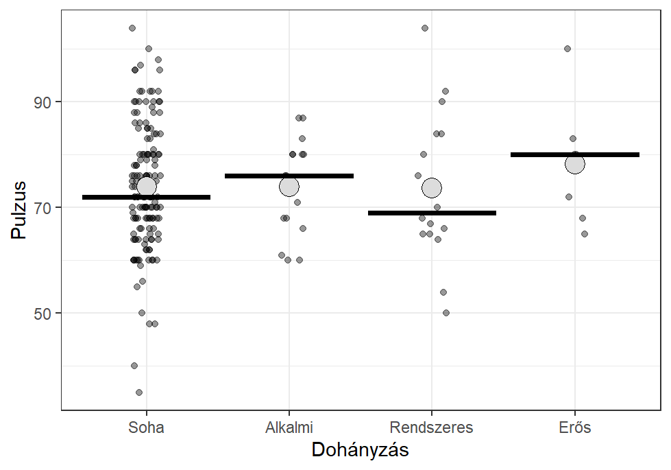
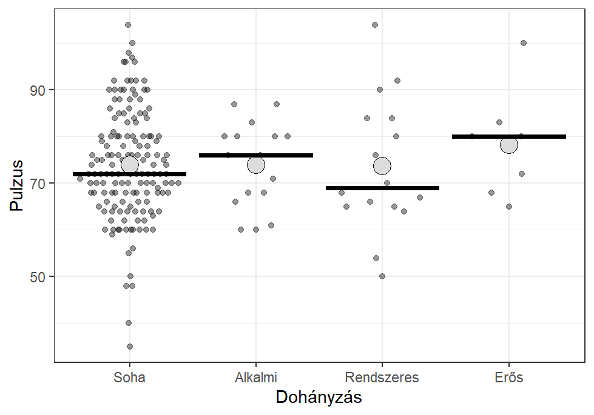
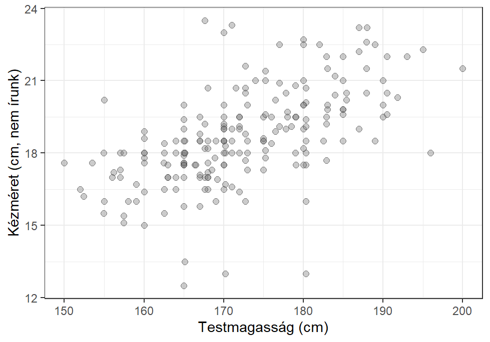
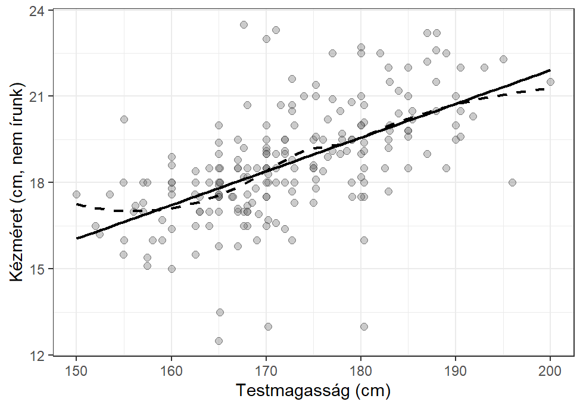
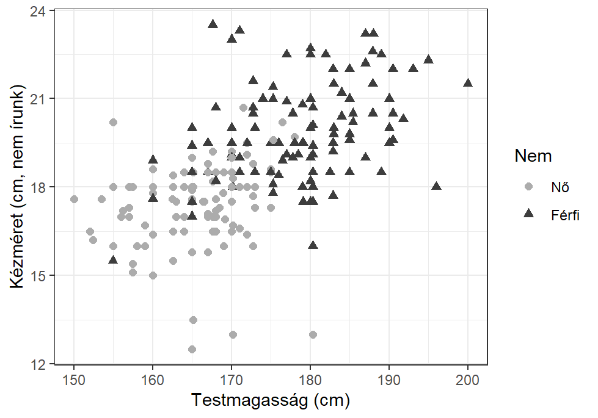
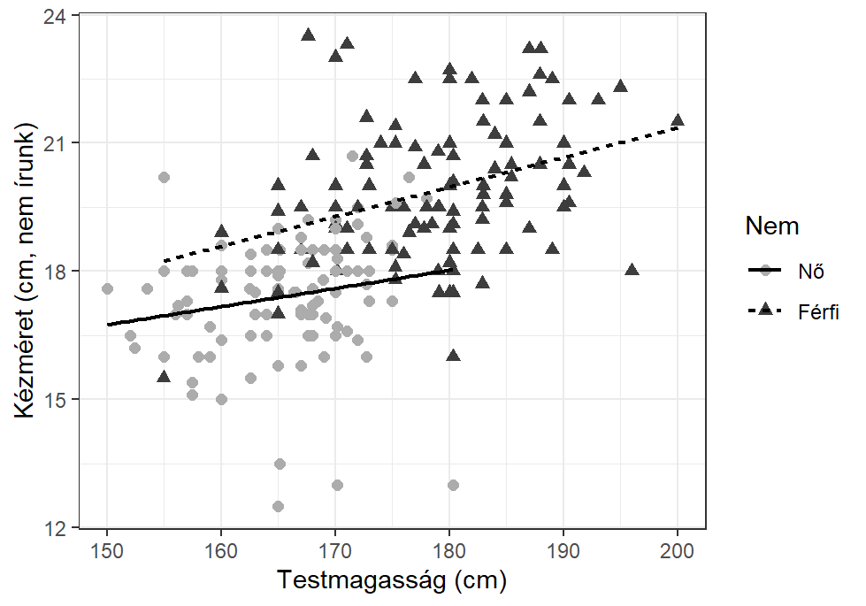
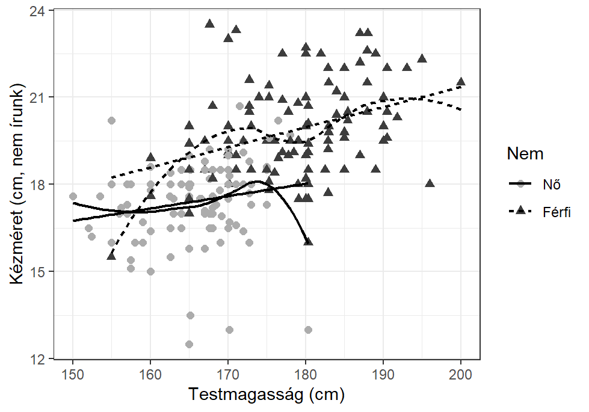

# Adatok beolvasása
d <- rio::import(file = "adat/survey.xlsx")6 Pontdiagram
6.1 Egydimenziós pontdiagram
Feladat
A survey.xlsx 237 egyetemista adatát tartalmazza. A Smoke változó a dohányzásra vonatkozó kérdésre adott válaszokat tartalmazza. A Pulse változó a pulzust méri. Rajzoljuk meg a pulzus nyers pontjait a dohányzási szokás egyes kategóriáiban, adjuk meg az átlagot és a mediánt is.
6.1.1 Adatok beolvasása
Elvégezzük az adatok beolvasását a survey.xlsx fájlból. Ha az adatok SPSS .sav formátumban állnak rendelkezésre, akkor a beolvasás ugyanígy történik.
6.1.2 Előkészítés
Elképzelhető, hogy adataink közvetlenül a beolvasás után még nincsenek elemezhető állapotban. Néhány előkészítő lépést most valóban el kell végeznünk, de ez nem minden adatbázis esetén szükséges:
- a dohányzási szokásokat tartalmazó változó (
Smoke) ordinális, így faktorrá kell alakítanunk - rendezzük az ordinálissá alakított
Smokeváltozó szintjeit a természetes sorrendbe.
library(tidyverse)
# faktorrá alakítás
d$Smoke <- factor(d$Smoke, ordered = T)
# faktor szintjeinek rendezése
d$Smoke <- forcats::fct_relevel(d$Smoke, "Never", "Occas", "Regul", "Heavy")6.1.3 Elemzés
Leíró statisztikai elemzés segítségével megnézzük, hogy milyen értékek ábrázolását fogjuk elvégezni.
# leíró statisztikai mutatók a jmv csomag segítségével
jmv::descriptives(data = d, vars = "Pulse", split = "Smoke")
#>
#> DESCRIPTIVES
#>
#> Descriptives
#> ───────────────────────────────────────────
#> Smoke Pulse
#> ───────────────────────────────────────────
#> N Never 152
#> Occas 16
#> Regul 16
#> Heavy 7
#> Missing Never 37
#> Occas 3
#> Regul 1
#> Heavy 4
#> Mean Never 73.99342
#> Occas 73.93750
#> Regul 73.68750
#> Heavy 78.28571
#> Median Never 72.00000
#> Occas 76.00000
#> Regul 69.00000
#> Heavy 80.00000
#> Standard deviation Never 11.71035
#> Occas 9.226547
#> Regul 14.42553
#> Heavy 11.70063
#> Minimum Never 35.00000
#> Occas 60.00000
#> Regul 50.00000
#> Heavy 65.00000
#> Maximum Never 104.0000
#> Occas 87.00000
#> Regul 104.0000
#> Heavy 100.0000
#> ───────────────────────────────────────────6.1.4 Publikációkész ábra - 1.
Elkészítjük a publikációkész ábrát. Most olyan megjelenítést választottunk, amelyben a pontokat egy kis eltolással jelenítjük meg, hogy az egymást átfedő pontok lehetőleg ne takarják ki egymást. A pontokat áttetszőre rajzoltuk, hogy az egymásra rajzolt pontok sűrűsége is látható legyen. Az átlagot és a mediánt is megjelenítjük. Az átlagot egy nagy szürke ponttal, a mediánt egy fekete vonallal jelöljük.
# ggplot2 csomagok betöltése
library(ggplot2)
# a p1 objektuma rajzolunk
p1 <- ggplot(data=d, aes(x=Smoke, y=Pulse)) +
# pontdiagram kirajzolása, véletlen x irányú eltolással
geom_jitter(width = 0.1, height = 0, alpha=0.4) +
# átlag megjelenítése egy nagy szürke ponttal
stat_summary(fun = mean, geom = "point",
size=5, shape=21, fill="#dcdcdc", col="black",
position = position_dodge(width = 0.5)) +
# medián megjelenítése egy fekete vonallal
stat_summary(fun=median, fun.min=median, fun.max=median,
geom="crossbar", col="black",
position = position_dodge(width = 0.5)) +
# x tengely beállítása
scale_x_discrete(na.translate = FALSE,
labels=c(Never="Soha",
Occas="Alkalmi",
Regul="Rendszeres",
Heavy="Erős")) +
# feliratok hozzáadása
labs(x = "Dohányzás", y = "Pulzus") +
# fekete-fehér stílus hozzáadása
theme_bw()
# p1 # a p1 ábra kirajzolása
# a p1 ábra mentése
ggsave("output/kep/pontdiagram_01.png", plot = p1,
units = "in", width = 6, height = 6*0.6, dpi = 300, scale = 0.8)p1 # a p1 ábra kirajzolása a képernyőre
6.1.5 Publikációkész ábra - 2.
Elkészítjük a publikációkész ábrát. Most olyan megjelenítést választottunk, amely a pontok egymásra rajzolását a lehetőség szerint elkerüli. A pontokat áttetszőre rajzoltuk, hogy az egymásra rajzolt pontok sűrűsége is látható legyen. Az átlagot és a mediánt is megjelenítjük. Az átlagot egy nagy szürke ponttal, a mediánt egy fekete vonallal jelöljük.
# ggplot2 csomagok betöltése
library(ggplot2)
# a p1 objektuma rajzolunk
p1 <- ggplot(data=d, aes(x=Smoke, y=Pulse)) +
# pontok kirajzolása, egymásra rajzolás elkerülése
ggbeeswarm::geom_quasirandom(alpha=0.4) +
# átlag megjelenítése egy nagy szürke ponttal
stat_summary(fun = mean, geom = "point",
size=5, shape=21, fill="#dcdcdc", col="black",
position = position_dodge(width = 0.5)) +
# medián megjelenítése egy fekete vonallal
stat_summary(fun=median, fun.min=median, fun.max=median,
geom="crossbar", col="black",
position = position_dodge(width = 0.5)) +
# x tengely beállítása
scale_x_discrete(na.translate = FALSE,
labels=c(Never="Soha",
Occas="Alkalmi",
Regul="Rendszeres",
Heavy="Erős")) +
# feliratok hozzáadása
labs(x = "Dohányzás", y = "Pulzus") +
# fekete-fehér stílus hozzáadása
theme_bw()
# p1 # a p1 ábra kirajzolása
# a p1 ábra mentése
ggsave("output/kep/pontdiagram_02.png", plot = p1,
units = "in", width = 6, height = 6*0.6, dpi = 300, scale = 0.8)p1 # a p1 ábra kirajzolása a képernyőre
6.2 Kétdimenziós pontdiagram - csoportosítás nélkül
Feladat
A survey.xlsx 237 egyetemista adatát tartalmazza. A Height változó a magasságot tartalmazza cm-ben, míg a NW.Hnd annak a kezünknek a méretét, amelyikkel nem szoktunk írni. Készítsünk kétdimenziós pontdiagramot a testmagasság és a kéz hossza változók kapcsolatának vizsgálatára.
6.2.1 Adatok beolvasása
Elvégezzük az adatok beolvasását a survey.xlsx fájlból. Ha az adatok SPSS .sav formátumban állnak rendelkezésre, akkor a beolvasás ugyanígy történik.
# Adatok beolvasása
d <- rio::import(file = "adat/survey.xlsx")6.2.2 Előkészítés
Elképzelhető, hogy adataink közvetlenül a beolvasás után még nincsenek elemezhető állapotban. Azonban ez nem minden adatbázis esetén szükséges, ebben az esetben sem.
6.2.3 Elemzés
Leíró statisztikai elemzés segítségével megnézzük, hogy milyen értékek ábrázolását fogjuk elvégezni.
# leíró statisztikai mutatók a jmv csomag segítségével
jmv::descriptives(data = d, vars = c("Height", "NW.Hnd"))
#>
#> DESCRIPTIVES
#>
#> Descriptives
#> ──────────────────────────────────────────────
#> Height NW.Hnd
#> ──────────────────────────────────────────────
#> N 209 236
#> Missing 28 1
#> Mean 172.3809 18.58263
#> Median 171.0000 18.50000
#> Standard deviation 9.847528 1.967068
#> Minimum 150.0000 12.50000
#> Maximum 200.0000 23.50000
#> ──────────────────────────────────────────────6.2.4 Publikációkész ábra - 1.
Elkészítjük a publikációkész ábrát. Most csupán a pontokat jelenítjük meg.
# ggplot2 csomagok betöltése
library(ggplot2)
# p1 - kétdimenziós pontdiagram
p1 <- ggplot(data=d, aes(x=Height, y=NW.Hnd)) +
# pontok kirajzolása
geom_point(shape=21, size=2, fill="#7c7c7c", col="black", alpha=0.4) +
# feliratok hozzáadása
labs(x = "Testmagasság (cm)", y = "Kézméret (cm, nem írunk)") +
# fekete-fehér stílus hozzáadása
theme_bw()
# p1 # a p1 ábra kirajzolása
# a p1 ábra mentése
ggsave("output/kep/pontdiagram_03.png", plot = p1,
units = "in", width = 6, height = 6*0.6, dpi = 300, scale = 0.8)p1 # a p1 ábra kirajzolása a képernyőre
6.2.5 Publikációkész ábra - 2.
Elkészítjük a publikációkész ábrát. Most a pontok mellett a lineáris regressziós egyenest is megjelenítjük.
# ggplot2 csomagok betöltése
library(ggplot2)
# p1 - kétdimenziós pontdiagram
p1 <- ggplot(data=d, aes(x=Height, y=NW.Hnd)) +
# pontok kirajzolása
geom_point(shape=21, size=2, fill="#7c7c7c", col="black", alpha=0.4) +
# a regressziós egyenes
geom_smooth(method = "lm", se=F, colour="black", linewidth=0.8) +
# feliratok hozzáadása
labs(x = "Testmagasság (cm)", y = "Kézméret (cm, nem írunk)") +
# fekete-fehér stílus hozzáadása
theme_bw()
# p1 # a p1 ábra kirajzolása
# a p1 ábra mentése
ggsave("output/kep/pontdiagram_04.png", plot = p1,
units = "in", width = 6, height = 6*0.6, dpi = 300, scale = 0.8)p1 # a p1 ábra kirajzolása a képernyőre6.2.6 Publikációkész ábra - 3.
Elkészítjük a publikációkész ábrát. Most pontok és a lineáris regressziós egyenes megjelenítése mellett egy görbeillesztést is elvégzünk.
# ggplot2 csomagok betöltése
library(ggplot2)
# p1 - kétdimenziós pontdiagram
p1 <- ggplot(data=d, aes(x=Height, y=NW.Hnd)) +
# pontok kirajzolása
geom_point(shape=21, size=2, fill="#7c7c7c", col="black", alpha=0.4) +
# a regressziós egyenes
geom_smooth(method = "lm", se=F, colour="black", linewidth=0.8) +
# illesztés görbe segítségével
geom_smooth(method = "loess", se=F, colour="black", linetype="dashed", size=0.8) +
# feliratok hozzáadása
labs(x = "Testmagasság (cm)", y = "Kézméret (cm, nem írunk)") +
# fekete-fehér stílus hozzáadása
theme_bw()
# p1 # a p1 ábra kirajzolása
# a p1 ábra mentése
ggsave("output/kep/pontdiagram_05.png", plot = p1,
units = "in", width = 6, height = 6*0.6, dpi = 300, scale = 0.8)p1 # a p1 ábra kirajzolása a képernyőre
6.3 Kétdimenziós pontdiagram - csoportosítással
Feladat
A survey.xlsx 237 egyetemista adatát tartalmazza. A Height változó a magasságot tartalmazza cm-ben, míg a NW.Hnd annak a kezünknek a méretét, amelyekkel nem szoktunk írni. A nem változó (Sex) figyelembevételével készítsünk kétdimenziós pontdiagramot a testmagasság és a kéz hossza változók kapcsolatának vizsgálatára.
6.3.1 Adatok beolvasása
Elvégezzük az adatok beolvasását a survey.xlsx fájlból. Ha az adatok SPSS .sav formátumban állnak rendelkezésre, akkor a beolvasás ugyanígy történik.
# Adatok beolvasása
d <- rio::import(file = "adat/survey.xlsx")6.3.2 Előkészítés
Elképzelhető, hogy adataink közvetlenül a beolvasás után még nincsenek elemezhető állapotban. Néhány előkészítő lépést most valóban el kell végeznünk, de ez nem minden adatbázis esetén szükséges:
- a nem változó (
Sex) nominális, így faktorrá kell alakítanunk, - azokkal a személyekkel nem szeretnénk elemzést végezni, akiknek nincs megadva a nemük, így ezeket a sorokat kiszűrjük az adatbázisból.
library(tidyverse)
# faktorrá alakítás
d$Sex <- factor(d$Sex)
# kiszűrjük azokat a személyeket,akiknek nincs megadva a nemük
d <- d |>
dplyr::filter(!is.na(Sex))6.3.3 Elemzés
Leíró statisztikai elemzés segítségével megnézzük, hogy milyen értékek ábrázolását fogjuk elvégezni.
# leíró statisztikai mutatók a jmv csomag segítségével
jmv::descriptives(data = d, vars = "Sex", freq = T)
#>
#> DESCRIPTIVES
#>
#> Descriptives
#> ─────────────────────────────
#> Sex
#> ─────────────────────────────
#> N 236
#> Missing 0
#> Mean
#> Median
#> Standard deviation
#> Minimum
#> Maximum
#> ─────────────────────────────
#>
#>
#> FREQUENCIES
#>
#> Frequencies of Sex
#> ──────────────────────────────────────────────────
#> Sex Counts % of Total Cumulative %
#> ──────────────────────────────────────────────────
#> Female 118 50.00000 50.00000
#> Male 118 50.00000 100.00000
#> ──────────────────────────────────────────────────# leíró statisztikai mutatók a jmv csomag segítségével
jmv::descriptives(data = d, vars = c("Height", "NW.Hnd"), splitBy = "Sex")
#>
#> DESCRIPTIVES
#>
#> Descriptives
#> ────────────────────────────────────────────────────────
#> Sex Height NW.Hnd
#> ────────────────────────────────────────────────────────
#> N Female 102 118
#> Male 106 117
#> Missing Female 16 0
#> Male 12 1
#> Mean Female 165.6867 17.45678
#> Male 178.8260 19.71453
#> Median Female 166.7500 17.60000
#> Male 180.0000 19.50000
#> Standard deviation Female 6.151777 1.407822
#> Male 8.380252 1.804605
#> Minimum Female 150.0000 12.50000
#> Male 154.9400 13.30000
#> Maximum Female 180.3400 20.70000
#> Male 200.0000 23.50000
#> ────────────────────────────────────────────────────────6.3.4 Publikációkész ábra - 1.
Elkészítjük a publikációkész ábrát. Most csupán a pontokat jelenítjük meg, de a nem változó hatását is figyelembe vesszük.
# ggplot2 csomagok betöltése
library(ggplot2)
# p1 - kétdimenziós pontdiagram
p1 <- ggplot(data=d, aes(x=Height, y=NW.Hnd,
col=Sex, shape=Sex)) +
# pontok kirajzolása
geom_point(size=2) +
# színek beállítása
scale_colour_manual(values=c("#acacac", "#3d3d3d"),
labels=c(Female="Nő", Male="Férfi")) +
# formák beállítása
scale_shape_discrete(labels=c(Female="Nő", Male="Férfi")) +
# feliratok hozzáadása
labs(x = "Testmagasság (cm)", y = "Kézméret (cm, nem írunk)",
color="Nem", shape="Nem") +
# fekete-fehér stílus hozzáadása
theme_bw()
# p1 # a p1 ábra kirajzolása
# a p1 ábra mentése
ggsave("output/kep/pontdiagram_06.png", plot = p1,
units = "in", width = 6, height = 6*0.6, dpi = 300, scale = 0.8)p1 # a p1 ábra kirajzolása a képernyőre
6.3.5 Publikációkész ábra - 2.
Elkészítjük a publikációkész ábrát. Most pontok mellett a lineáris regressziós egyenest is megjelenítjük. A nem változó hatását is figyelembe vesszük.
# ggplot2 csomagok betöltése
library(ggplot2)
# p1 - kétdimenziós pontdiagram
p1 <- ggplot(data=d, aes(x=Height, y=NW.Hnd,
col=Sex, shape=Sex, linetype=Sex)) +
# pontok kirajzolása
geom_point(size=2) +
# színek beállítása
scale_colour_manual(values=c("#acacac", "#3d3d3d"),
labels=c(Female="Nő", Male="Férfi")) +
# formák beállítása
scale_shape_discrete(labels=c(Female="Nő", Male="Férfi")) +
# vonaltípus beállítása
scale_linetype_discrete(labels=c(Female="Nő", Male="Férfi")) +
# a regressziós egyenes
geom_smooth(method = "lm", se=F, colour="black", linewidth=0.8) +
# feliratok hozzáadása
labs(x = "Testmagasság (cm)", y = "Kézméret (cm, nem írunk)",
color="Nem", shape="Nem", linetype="Nem") +
# fekete-fehér stílus hozzáadása
theme_bw()
# p1 # a p1 ábra kirajzolása
# a p1 ábra mentése
ggsave("output/kep/pontdiagram_07.png", plot = p1,
units = "in", width = 6, height = 6*0.6, dpi = 300, scale = 0.8)p1 # a p1 ábra kirajzolása a képernyőre
6.3.6 Publikációkész ábra - 3.
Elkészítjük a publikációkész ábrát. Most pontok és a lineáris regressziós egyenes megjelenítése mellett egy görbeillesztést is elvégzünk. A nem változó hatását is figyelembe vesszük.
# ggplot2 csomagok betöltése
library(ggplot2)
# p1 - kétdimenziós pontdiagram
p1 <- ggplot(data=d, aes(x=Height, y=NW.Hnd,
col=Sex, shape=Sex, linetype=Sex)) +
# pontok kirajzolása
geom_point(size=2) +
# színek beállítása
scale_colour_manual(values=c("#acacac", "#3d3d3d"),
labels=c(Female="Nő", Male="Férfi")) +
# formák beállítása
scale_shape_discrete(labels=c(Female="Nő", Male="Férfi")) +
# vonaltípus beállítása
scale_linetype_discrete(labels=c(Female="Nő", Male="Férfi")) +
# a regressziós egyenes
geom_smooth(method = "lm", se=F, colour="black", linewidth=0.8) +
# illesztés görbe segítségével
geom_smooth(method = "loess", se=F, colour="black", size=0.8) +
# feliratok hozzáadása
labs(x = "Testmagasság (cm)", y = "Kézméret (cm, nem írunk)",
color="Nem", shape="Nem", linetype="Nem") +
# fekete-fehér stílus hozzáadása
theme_bw()
# p1 # a p1 ábra kirajzolása
# a p1 ábra mentése
ggsave("output/kep/pontdiagram_08.png", plot = p1,
units = "in", width = 6, height = 6*0.6, dpi = 300, scale = 0.8)p1 # a p1 ábra kirajzolása a képernyőre